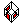

You may toggle visibility of 'LSS Zone' related layers:
- 'LSS Zone' layer
- 'LSS Zone Area' layer
- 'LSS Zone Ceiling' layer
- 'LSS Zone Walls' layer
- 'LSS Zone Floor' layer
- 'LSS Zone Volume' layer
-  'LSS Zone Openings' layer
- hide all other layers except 'LSS Zone' related ones
Refer to 'Elements of a Zone' chapter in order to learn more about what exactly stored on each layer.
In a new model there are no 'LSS Zone' related layers, so extension suggests to create layers
after clicking on any button of 'Layers Toolbar'.